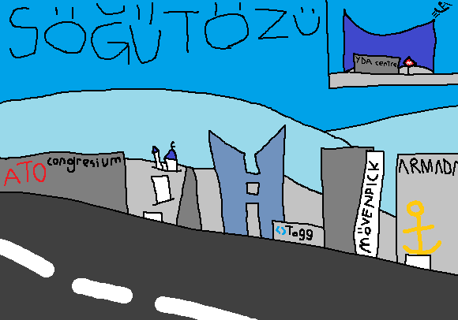

Çukurambar ve İşçi Blokları gibi sıradan bir ilçe - mi? Hayır, merkezî iş mahallesi. Bu yüzden tonlarca gökdeleni var hâttâ belediye tarafından havalimanı yolunda turistik mekân diye duvar resmi yapıldı. Bence piramitsel anlayışa göre bura merkez olmaya uygun bir aday. Ankara'da sadece bu ve de Atakule / Büyük Çankaya Oteli gibi gökdelensel şehirleşme öncesi landmark amaçlı yapılmış gökdelenler olsa tamamım. Ya da yok, Büyük Çankaya Oteli olmasa da olur.